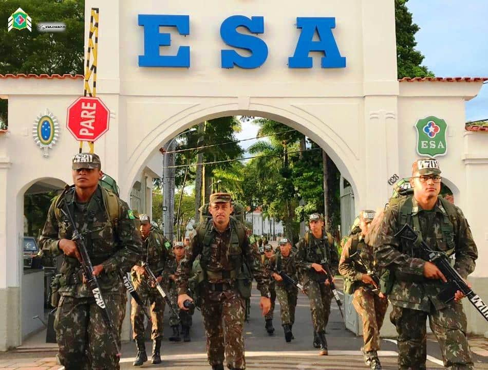

Onde iniciou sua carreira:
No ano de 1944, apresentou-se voluntariamente para compor a Força Expedicionária Brasileira, integrando a então 1ª Companhia do 11º Regimento de Infantaria (11º RI), de São João Del-Rei (MG)
Sua bravura:
Destacou-se por sua bravura no decorrer da Guerra, tornando-se conhecido pelo seu destemor, intrepidez e abnegação. Suas façanhas eram proclamadas pelas partes de combate e por vários correspondentes de guerra das imprensas nacional e estrangeira. No dia 12 de abril de 1945, o 11º RI recebeu a missão de reconhecer a região de Monte Forte e Biscaia, a denominada "terra de ninguém.
O dia em que o sargento max wolff filho foi morto em batalha em solo alemão:
O sargento Wolff foi voluntário para comandar a patrulha de reconhecimento, que foi constituída por 19 militares que se haviam destacado por competência e bravura em outros combates. Nessa missão, foi fatalmente atingido por uma rajada de metralhadora alemã, que o atingiu na altura do peito, Somente vários dias após seu passamento o corpo do sargento Max Wolff Filho foi encontrado. Foi agraciado post mortem com as medalhas de Campanha de Sangue e Cruz de Combate, do Brasil; e com a medalha Bronze Star, dos Estados Unidos da América.Foi sepultado no Cemitério Militar Brasileiro, em Pistóia, na Itália; posteriormente, seus restos mortais foram trasladados para o Brasil. Em sua homenagem, a Escola de Sargentos das Armas (EsSA) leva seu nome como patrono.
Sua homenagem:
A Escola de Sargentos das Armas (ESA) recebeu o nome de Escola Sargento Max Wolff Filho em 2007, por meio da Portaria 229, em homenagem ao herói da Segunda Guerra Mundia

clube sargento wolff